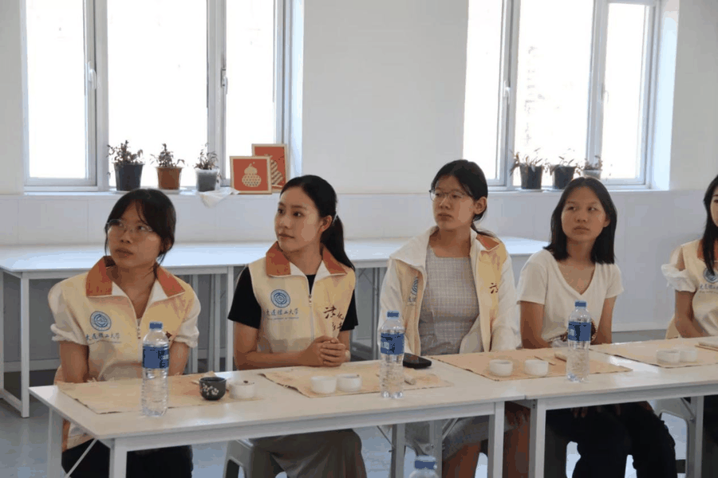
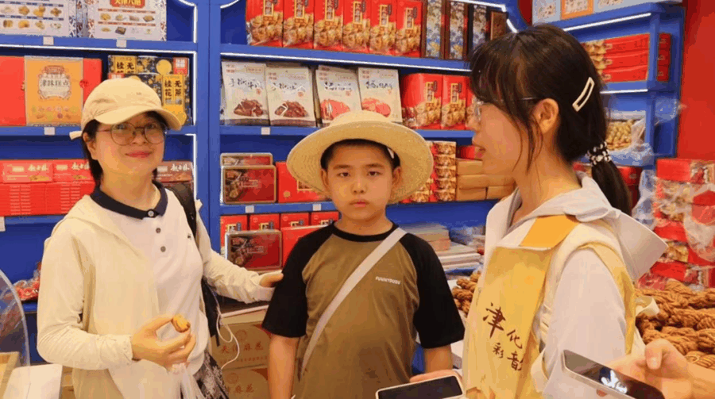
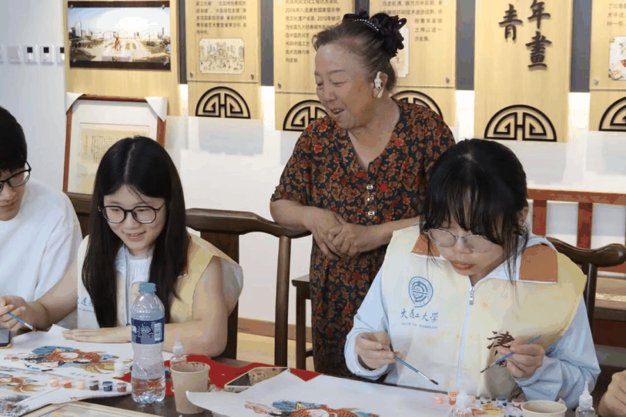
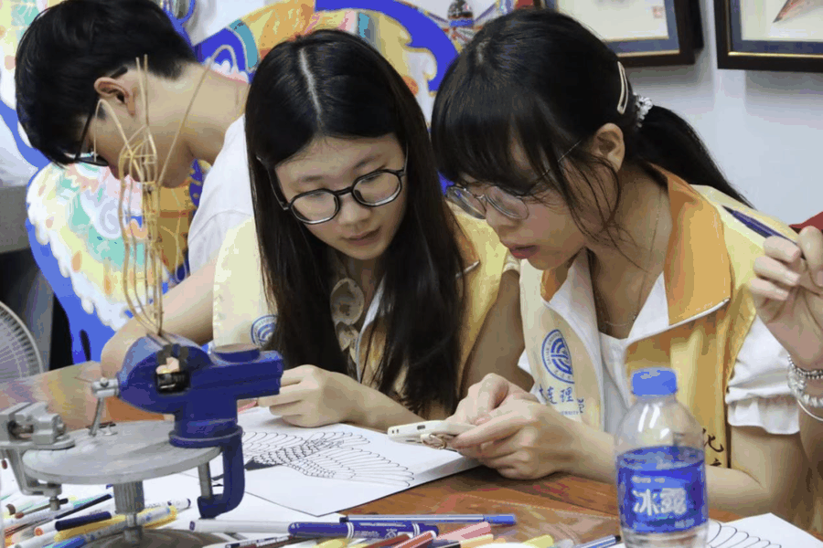

【行者无疆·津彩化韵】个人实践感悟——韩可欣
岁月失语，惟石能言——
津门非遗长卷里的文化呼吸
“天津卫，古城堡，历史悠久文化厚。”五日跋涉，我与伙伴们以行者之名，在这座素有“渤海明珠”的城市肌理上触摸非遗生命的律动。
泥土传递的温度

在王美老师的工作室，土坯在掌心几经翻转、揉塑成型。看着非遗传承人们手指翻飞间捏出一个个栩栩如生的形象，我才懂得“匠心”二字不仅藏在文物的纹路中，更在每一次亲手触摸与尝试的欢欣里。当我也倾身揉捏那团微凉的泥土，指纹深陷的刹那——那些关于坚守的故事，似乎从史料文字化作掌心跳动的脉搏，那样鲜活。
墨色晕染的清香


踏进杨柳青文成阁时，空气里浮动着松墨与宣纸的清香。在王琳杰老师的指导下，我们调制水彩为《莲年有余》线稿“披霓裳”，渐变层染中恍然发现：何以“家家会点染，户户善丹青”？那层层叠叠的彩，原是天津人骨血里流淌的文化基因。
面塑凝聚的魂魄
张亚杰老师的指尖仿佛有魔法，小小的面粉团在他掌心翻滚腾挪，转眼便化作憨态可掬的哪吒。而当我们亲手塑形时，才惊觉柔软面团的“叛逆”——揉捏搓压，每一步都是耐心与细致的考验，也需要整体与局部的考量。当最终捧起属于自己的小哪吒，那歪斜的发髻、搞怪的神情，却比博物馆的完美展品更令人悸动。我想不完美的传承，恰是文化最真实的胎记。

火笔定格的春秋
葫芦别苑里电烙笔滋滋作响，如一支在葫芦皮上吟唱的歌谣。房老师示范时，烙尖游走如飞燕掠水；待我执笔时，焦痕却在葫芦曲面上蜿蜒成颤抖的溪流。“别着急，慢慢来。”房老师用自己初学葫芦烙画时磕磕绊绊的经历鼓励和劝慰我们，让我有了不断调整与尝试的勇气。小小的烙画葫芦，不仅是两个小时打磨的成果，更是我与非遗更近一步的对话。
纸鸢系天的智慧

推开“风筝魏”工作室斑驳的大门，满室竹骨绢鸢如停驻的彩云。扎的是天地平衡，糊的是阴阳相济，魏国秋老师抚着太极风筝的骨架讲述起自己将这门技艺带向国外的经历，让我生出一股热意，对非遗传承人们数十年如一日坚守那份初心的热意。当亲手上色的风筝在斗室盘旋而起，没有长风助力，它依然倔强腾空——原来只要匠心不坠，方寸之地亦是苍穹。
离别时回望鼓楼长街，我忽然听见百年前年画雕版的笃笃声、葫芦烙笔的滋滋响、纸鸢破空的猎猎音，在时空中交织成永恒的和鸣。五日行旅在我心中埋下一颗种子——非遗传承，不在玻璃展柜的恒温里，而在市井巷陌的烟火中，在稚童触摸泥塑时发亮的眼眸里，在异国旅人举起葫芦茶器时的惊叹中。当海河晚风掠过耳际，行者终将离去，但我知道，那些被匠心焐热的泥土，终将在无数掌心新生；那些系着东方诗意的纸鸢，必将飞向更远的天空。
来源 | 行者无疆实践团
图片 | 行者无疆实践团
文字 | 韩可欣
编辑 | 张瑶琪
审核 | 张瑶琪 李凌志 杩健辉
责编 | 邹靓靓 周 亮